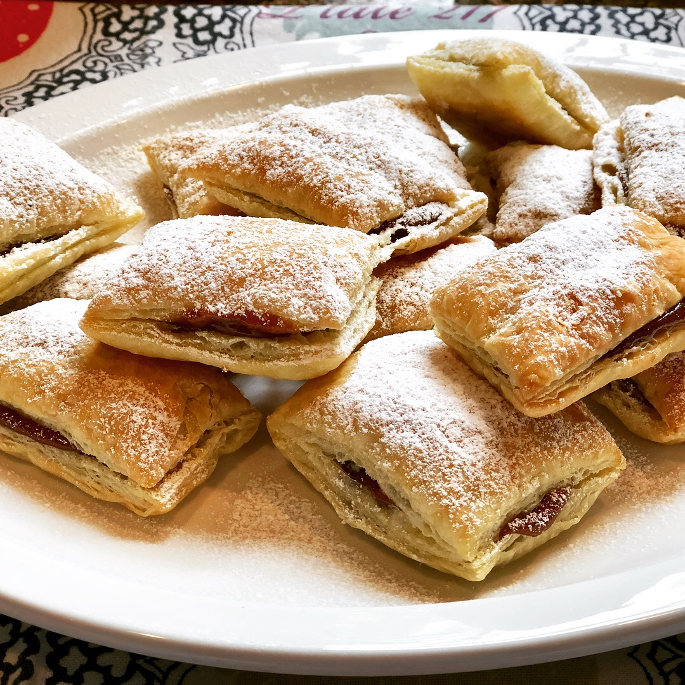

Puff Pastry Squares
Changed your mind? Go Back

Quick and Easy Perfect Puff Pastry Squares with Dulce de Leche
Looking for a quick and easy dessert that will wow your guests?
Try these simple 3-ingredient puff pastry squares filled with
dulce de leche. An absolute treat!
Ingredients
- 1 (17.5 ounce) package frozen puff pastry, thawed
- 1 cup dulce de leche
- 2 tablespoons confectioners' sugar
Instructions
- Preheat the oven to 400 degrees F (200 degrees C).
Line 2 baking sheets with parchment paper.
- Roll puff pastry over a floured surface;
cut into 1 1/2-inch squares. Place on the
prepared baking sheets.
- Bake in the preheated oven until lightly golden and crispy,
15 to 20 minutes.
- Transfer baked squares to a wire rack and let cool completely,
about 5 minutes. Slice each square in half.
- Spread 2 tablespoons dulce de leche on 1/2 of the puff pastry
squares; top with remaining puff pastry squares. Dust with confectioners' sugar.